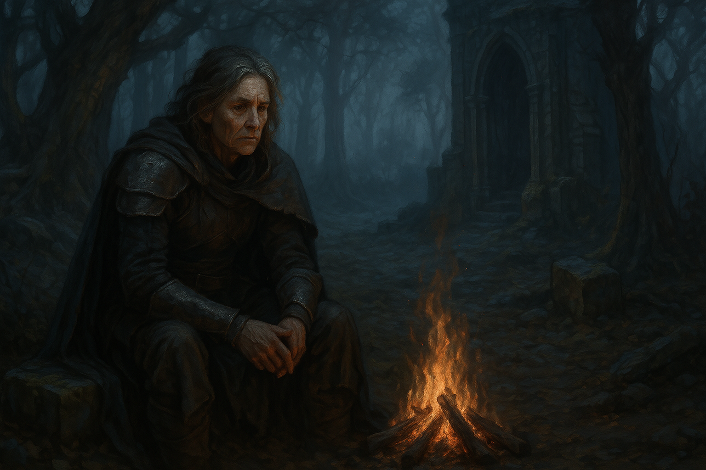

Chapter 5: Feywild Lost
Mattington Shattered

Mattington Shattered
Day 3 in the Feywild
一眨眼，大家都不見了，只留下 Ron 獨自一人在偌大的帳篷裡。Ron 也不知道該去哪裡，只好在帳蓬內繞行。
Ron 走到中心樹，用他的兩隻手，試圖再次和樹做連結，卻沒有得到什麼額外的資訊。
突然間，Ron 似乎感受到帳篷外有點動靜。他思索著 Elby 和 Indigo 過去對於帳篷外的說法，雖然不清楚，但是他知道大家被要求不要到帳篷外。但是除了帳篷外之外，Ron 也沒有別的更好的選擇了。
Ron 探頭到帳篷外，發現明明應該是白天的時間，外頭卻是一片黑暗。從帳篷內取出了火把，Ron 帶著火把在帳篷外遊蕩。外面什麼都沒有，只有泥土地和黑暗，而且火把不久就熄滅了，Ron 也只好再次回到帳篷內。然而，Ron 感受到帳篷外似乎有其他存在，就在他的周圍，但他不知道是什麼存在。
再次從帳篷內走出，Ron 舉著火把，開始繞行帳篷，他感受到帳篷其中一側似乎有被翻動，但他卻看不到任何正在活動的物體，單純看到帳篷被翻了起來後放下去，另他感到非常疑惑。同時，他也聽見了此起彼落的腳步聲，朝著帳篷前進，那感覺和他剛才感受到有別的存在很相似。
Ron 決定走到剛剛看見被翻起的帳篷那側去，一樣翻起帳篷，走了進去。然而，此刻他見到的帳篷內景象已和剛才截然不同。帳篷內是一片黑暗，只有正中央似乎有些亮光。而且，他的正前方，似乎擋了多到快遮蔽住視線的人形生物，他們似乎穿著深黑色的盔甲，直挺挺地站在他面前，背對著他。Ron 聽見了熟悉的叫喊聲，似乎是來自那群他稱呼為夥伴的人們。Ron 試著推開站在他面前的黑色盔甲人們，意外的順利，他便一路竄出人群。
見到了失散已久的夥伴們，Ron 利用短暫的時間，搞清楚在「大家消失」到現在之間發生了什麼事情，接著他便和其他夥伴一起支援救援居民的行動。然而，一聲慘叫吸引了大家的注目。
頭一抬，冒險者們發現一群數量多到難以計算的黑色盔甲士兵已將居民們包圍，躺在最外圍的居民已被士兵攻擊。思索著該如何做，Midori 趕緊衝到居民前，試圖擋下士兵下一波的攻勢。
在 Samael 和 Indigo 的評估下，逃離妖精荒野回到原世界是最實際的作法。第一波，Indigo 帶著 YHWH、Franz 和 Ron 先回到了物質世界。
15050.11.15
多侖維爾寒冷的風讓 YHWH、Franz 和 Ron 恢復了意識。前陣子發生了什麼事？總覺得記憶糊糊的。旁邊那名太太又是誰？
身旁的妖精太太有些神秘，要大家叫他「阿嬤」就好，自己是大家的阿嬤。雖然不清楚發生什麼事情，這位名為 Indigo 的阿嬤雖然欲言又止，但似乎也不打算多做解釋了。四人走入旁邊的酒館，便入內休息。YHWH 和 Indigo 一間，Franz 和 Ron 一間。
大家擔心著其他夥伴們怎麼沒跟著大家一起，Indigo 表示再等一陣子，先好好休息吧。
酒館旁原本綁著的勇哥，似乎已經不見了身影。
15050.11.16
Ron 醒來後，發現 Franz 不見了，他便到酒館餐廳吃飯。酒館老闆看見他，便告訴他他的夥伴似乎離開了，而且他表示自己已經冒險夠了，想回家了。對於 Franz 的離開，Ron 也不知該怎麼想，於是便坐了下來好好享用早餐。
不久後，Ron 到鎮上探索，打聽到了現在是 15050 年，與他印象中上次在這個酒館時的 15048 年似乎多了兩年。
15050.11.17
Indigo、YWHW 和 Ron 繼續等待其他夥伴們歸來，卻還是什麼都沒等到。
15050.11.18
在一陣亮光下，Samael 知道自己的傳送成功了。但是在他帶著大家離開妖精荒野時，他感受到了一雙手從他身上鬆開。Beau 只留下了一句：對不起，我應該留在這裡繼續奮鬥，便消失在了大家的視線範圍內。然而這痛苦的一幕，只有 Samael 記得。
回到原世界，Siri 和 Midori 什麼都不記得了，Midori 只困惑著 Beau 怎麼不在他身邊。
三人走到酒館內，與提早回來的冒險者們相遇。想當然而，只有 Samael 記得他的阿嬤 Indigo。眾人在餐廳邊吃東西邊討論下一步，同時 Indigo 和 Samael 也嘗試將 Feywild 的事和其他人說明，但這也無法完全讓大家恢復記憶。
疲憊的 Siri 決定先入住，找個房間睡，Ron 則回到自己的房內打坐。Indigo 和 YHWH 一樣回到雙人房內休息，Samael 也找了間房入著，Midori 則決定去一趟麥克嵩，想打聽點消息。
Midori 召喚出一匹馬作為坐騎，快速地奔馳到了麥克嵩。在與衛兵詢問下，無法找到他過去曾去過的津菈教聚會所，同時他也打聽到 Mr. Moon 的辦公室似乎很久沒有人活動了。Mr. Moon 似乎已經不在這裡了。沒有多少有用的消息，Midori 決定策馬回多侖維爾。
休息足夠後，Samael 走出了房間，回到了酒館餐廳。空蕩蕩的餐廳，有個陌生卻又熟悉的人的背影。Samael 感到好奇，傾身向前，發現那名中年女子看向他，淚眼汪汪的。那神情，不會錯的，多麽熟悉，卻又好像在一夕之間老了好多好多。
Beau。
Beau 緊緊抱住 Samael，並將這中間發生的事情告訴 Samael。
在冒險者們離開妖精荒野後，Beau 和倖存的居民們四處逃竄，帳篷成了入侵者的大本營，而那些身著黑色盔甲的士兵們，正是拉索斯的戰力。拉索斯士兵四出追殺倖存者，倖存者也在荒野之中尋找資源。這段期間，Beau 也練就了不少功夫。然而，最終，Beau 成了唯一的倖存者，妖精荒野就這樣淪陷了，Beau 也只好下了狠心回到原世界了。然而，此時的時間流動又和過去不同，因此 Beau 回來時，與 Samael 傳送的時間，在原世界差不到一天。
在 Samael 的帶領下，Beau 見到了他許久不見的夥伴 Ron、「爸爸」Siri，「媽媽」Midori 則還沒回來。Samael 表示 YHWH 似乎還在忙，先不要打擾。
「你爸在你離開後到現在都還沒睡過。」
Samael, On Siri
Samael 帶著 Beau 在多侖維爾走走，來到了 Dr. White 過去在這裡的住處。簡單探索後，Beau 決定將這房子給拆了。Beau 拿起手上的棍子大力敲打，同時用拳頭努力破壞，但是在 Samael 眼中，Beau 的行為和小孩打打鬧鬧沒什麼兩樣，因此他透過魔法，助了 Beau 一臂之力，將房子給炸了開來。
回到旅店，Beau 和「媽媽」Midori 終於相見，而此時 Beau 已年約 40，Midori 則還是少女而已。Beau 也盡可能詳盡的和 Midori 說明了在妖精荒野到底發生了什麼事。
清楚了妖精荒野現在已不是個選項後，冒險者們的下一步，會是哪裡？